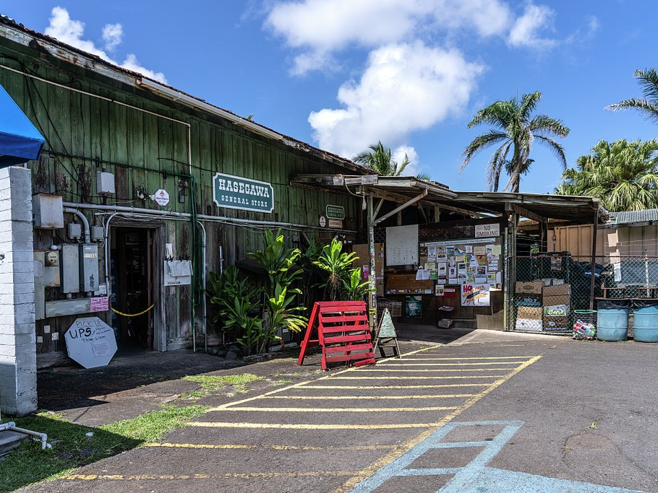

Hana · Luxury resort
Hana-Maui Resort
Bungalows and suites above the ocean, with a spa.
Official details for Hana-Maui ResortFly past the road to Hana.
The Road to Hana has more than 600 curves and 50 one-lane bridges; from the air, Hana is a short hop from Kahului or Honolulu. This green, rainy corner of East Maui is old Hawaii: a ranch town, a resort of bungalows above the sea, the black-sand beach at Waianapanapa, and the pools and bamboo forest of Haleakala’s Kipahulu district.

Time illustration: direct distance at 150 KTAS plus 15 minutes for departure and arrival, matching the discovery page. Use ForeFlight for your actual flight plan.
PHHN (HNM), Hana, is a non-towered state airport at 78 feet with a 3,606-foot runway a few miles from town.
Hana Airport, Hana, HI
No fuel listed. 35-foot trees along both sides of the runway; wild boars, ultralights and parachutists on and near the airport. Windward rain and low clouds are common. (FAA chart supplement remarks.)
Hawaiian flying: steady trade winds with strong gusts and mechanical turbulence near terrain and in the channels between islands, afternoon showers and low clouds over the mountains, sudden obscuration in valleys, and long over-water legs. Carry life vests and consider a raft. Hawaii is about 2,100 nm of open ocean from California, beyond the range of most light aircraft. These guides are for Hawaii-based pilots and for visitors who rent or fly with a local operator, typically from Honolulu (PHNL), Kalaeloa (PHJR) or Kahului (PHOG).
Rates and availability need travel dates. Book well ahead.
Bungalows and suites above the ocean, with a spa.
Official details for Hana-Maui ResortReserve weekend dinners.
Island cooking and the Paniolo Bar.
Official details for Hana-Maui Resort restaurantsFood trucks and stands around Hana.
Hawaii Tourism for More foodReserve Waianapanapa entry in advance.
This prototype links to the local visitor site. It does not yet match events to your travel dates.
Rain keeps East Maui lush.
Hawaii Tourism for Green seasonHumpbacks off Maui.
Hawaii Tourism for Whale seasonBetter odds of clear weather.
Hawaii Tourism for Drier monthsCheck the local calendar when choosing a weekend, and confirm dates and tickets with the organizer.
A sample Hana weekend. Written for Hawaii-based pilots and visitors already in the islands. No bookings or availability confirmed.
Land at PHHN mid-morning.
Waianapanapa black-sand beach (reservation).
Lunch in Hana, then back to the airport.
Land at PHHN, subject to weather and your actual flight plan.
Settle in at the resort.
Dinner at the resort.
Waianapanapa black-sand beach.
The Pipiwai Trail at Kipahulu.
Sunset at the resort.
A swim in Hana Bay.
Allow time at the airport.
Windward clouds can lower quickly; leave with a margin.
The Pipiwai Trail at Kipahulu.
The resort spa.
Dinner at the resort.
These details make the difference between an appealing list and a usable getaway.
Resort and Waianapanapa entry.
None at Hana; fuel at Kahului.
Short, with trees and wildlife near it.
April to October.
Research-based selections, not personal-visit endorsements. Researched November 1, 2026. Confirm hours, prices and availability directly with each place before booking. Spotted something out of date, or have a favorite we missed? Email us at hello@wingawayweekends.com.
WingAway Weekends helps you discover the destination. Use ForeFlight and current official aviation information for route, performance, weather, NOTAMs and preflight decisions. Flight planning and PIC responsibility stay with the pilot.